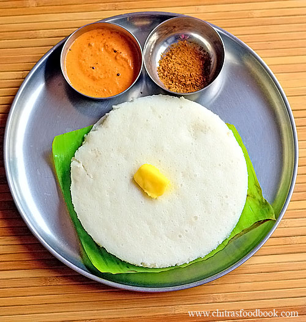

Thatte Idli

Description :
Indulge in the exquisite delight of Thatte Idli, a culinary masterpiece that not only pleases the senses but
also nurtures your well-being. This ethereal creation from South India is a testament to the harmony of flavor
and nutrition.
Imagine a delicate, disc-shaped wonder, with a velvety texture that effortlessly melts in your mouth. Each bite
unveils a symphony of flavors, a marriage of fermented rice and urad dal that dances on your taste buds.
Beyond its tantalizing taste, Thatte Idli offers numerous health benefits. The fermentation process enhances its
digestibility, promoting a healthy gut flora and aiding in nutrient absorption. Packed with carbohydrates,
proteins, and dietary fiber, it provides sustained energy and keeps you feeling satiated for longer. The
naturally gluten-free composition caters to those with dietary restrictions, while the absence of oil makes it a
low-fat option.
Embrace Thatte Idli not just for its unparalleled taste but also for its inherent goodness, an invitation to
nourish your body and soul.
Ingredients :
- Rice: The main component, usually parboiled or idli rice, provides the base for the idli batter.
- Urad Dal (Split Black Lentils): Adds a rich flavor and helps in the fermentation process.
- Fenugreek Seeds: These tiny seeds enhance the fermentation process and contribute to the idli's texture.
- Salt: Enhances the taste and balances the flavors.
- Water: Used for soaking the rice and lentils and for grinding the batter.
And finally the steps to prepare this :
- Soaking: Wash and soak 2 cups of rice and 1 cup of urad dal along with a teaspoon of fenugreek seeds in
separate bowls. Soak them for at least 4-6 hours or overnight.
- Grinding: Drain the water from both the rice and urad dal. Grind the urad dal and fenugreek seeds together
in a wet grinder or a food processor until you get a smooth and fluffy batter. Transfer it to a large bowl.
Next, grind the rice with a little water until it becomes a fine paste. Mix the rice batter with the urad
dal batter, add salt, and blend well. The batter should be of pouring consistency.
- Fermentation: Cover the bowl with a lid or plastic wrap and leave it in a warm place for fermentation. Let
it ferment for about 8-10 hours or overnight. The batter will rise and double in volume.
- Steaming: Grease the Thatte Idli plates (large, round, flat plates with small depressions) with a little
oil. Pour a ladleful of batter into each depression, filling it to the brim. Place the plates in a steamer
and steam for about 10-12 minutes until the idlis are cooked and firm. Insert a toothpick or a knife into an
idli to check if it comes out clean.
- Serving: Once the idlis are cooked, remove them from the steamer and let them cool for a minute. Gently
loosen the edges of the idlis with a spoon and remove them from the plates. Serve hot with sambar, chutney,
or your favorite accompaniments.
Enjoy the fluffy, spongy, and delectable Thatte Idlis as a wholesome breakfast or a delightful snack!
Back to home page